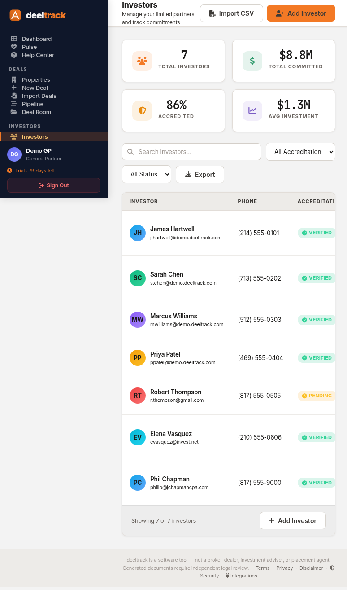

Investor CRM: Manage Your LP Relationships in One Place

Your investor roster — accreditation status, total commitments, and deal involvement at a glance.Your investors aren't just names on a cap table. They have accreditation statuses that expire, tax profiles that need updating, banking details for distributions, commitments across multiple deals, and a communication history that you need to maintain for compliance.
Most sponsors track this in a spreadsheet, a CRM, and their email — three places that don't talk to each other. deeltrack puts it all in one investor profile that connects to every deal, distribution, and document in the system.
The Investor Roster
The main investors page shows every LP in your portfolio:
- Name and contact info
- Accreditation status — verified, pending, expired (color-coded)
- Total committed capital — across all deals
- Number of deals — how many properties they're invested in
- Last activity — when they last logged into the portal or received a distribution
Search by name, filter by accreditation status, or sort by commitment size. For a sponsor with 50+ investors, this is the view you use daily.
The Investor Profile
Click into any investor and you see their complete relationship history:
Personal & Contact
- Name, email, phone, address
- Entity type (individual, trust, LLC, IRA)
- Portal access status
Accreditation
- Verification method (income, net worth, professional certification)
- Verification date and expiry
- Status: verified, pending, expired
Pulse automatically flags investors whose accreditation is expiring within 30 days or has already expired — so you can reach out proactively instead of discovering the issue when they try to commit to a new deal.
Tax Profile
- TIN/SSN (encrypted with Cloud KMS)
- Entity name (if investing through an entity)
- Tax address
- W-9 status
Sensitive fields like TINs, SSNs, routing numbers, and account numbers are encrypted at rest using Google Cloud KMS (AES-256-GCM). This isn't "we encrypt the database" — each sensitive field is individually encrypted with a key managed by a hardware security module. If someone gained access to the database, they'd see ciphertext, not investor SSNs.
Banking Details
- Bank name, routing number, account number (all encrypted)
- Preferred distribution method (wire, ACH, check)
When you post a distribution, deeltrack pulls these details into the wire report automatically. If banking details are missing, Pulse flags it before you try to send money to an investor with no bank info on file.
Deal Involvement
Every deal the investor participates in, with their commitment amount, ownership percentage, and total distributions received. This cross-deal view is invaluable when an LP asks "What's my total exposure across all your deals?"
Linking Investors to Deals
Adding an investor to a deal takes two fields: select the investor, enter the commitment amount. deeltrack calculates ownership percentage automatically based on the deal's total equity.
The link is bidirectional — add an investor from the deal profile and they appear in the investor CRM's deal history. Add them from the investor profile and they appear in the deal's investor table. Same connection, accessible from both sides.
Duplicate Detection
Pulse checks for duplicate email addresses across your investor roster. Two investors with the same email means portal access problems, K-1 delivery confusion, and distribution notification issues. It flags duplicates so you can merge or correct them.
TIN Validation
When you enter an investor's TIN (SSN or EIN), deeltrack validates the format against IRS rules:
- SSN: 9 digits, valid area/group number format
- EIN: 9 digits, valid prefix per IRS assignment rules
This catches transposition errors at entry time instead of at K-1 generation time — when it's much more expensive to fix.
What Connects
The investor profile is the hub that connects to everything else in deeltrack:
- Deals → their commitments and ownership
- Distributions → every payment they've received, with waterfall breakdown
- Capital accounts → their balance per deal
- K-1 Vault → their tax documents by year
- LP Portal → their self-service access
- Compliance → accreditation status and expiry
Change an investor's name, and it updates across every deal profile, distribution record, and portal view. No manual propagation needed.
Know your investors as well as they know you.
$49/deal/month. Investor CRM included. No per-investor fees.
Get Started Free →